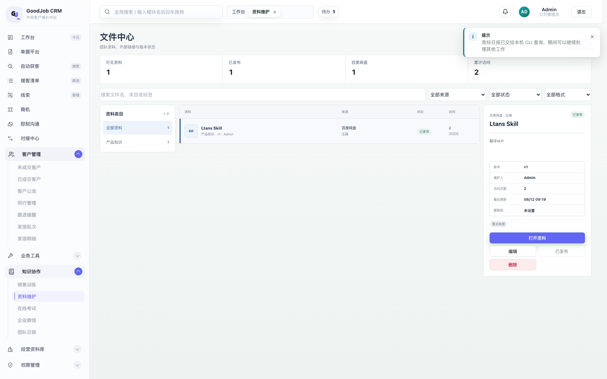

GoodJob CRM · 文档管理体检
对象＝文件中心（资料维护）及其下游——资源中心检索与插件训练库这两条服务于「会话推荐」的语料链路。 结论先说：综合 3.1 / 10，必须重做而不是美化。它现在的问题不是"界面土"，而是 供给侧没有质量标准、需求侧没有反馈回流——这恰好就是你担心的"文档一多，推荐就不准"的成因。
knowledge_assets），它是资源中心四源里唯一的"文档"源，
也是扩展右侧「相关文档」面板的供给端。
顺带把你提到的「沉淀训练」一并体检了——那是插件「训练与自动回复」里的训练库（表 training_library_entries）。
如果你说的其实是「单据平台」或别处，直接说，我改口径。
看清供需两侧，才知道"多"到底伤在哪一环。
【供给 A · 文档】 【供给 B · 会话沉淀】
文件中心 knowledge_assets 归档并学习（插件）
(title/category/tags/summary/URL) │
│ ▼
│ 训练档案 training_profiles
│ (话术样本 ≤200 + 风格)
▼ │ importFromProfile
资源中心 resource-hub ◀──── skill_resources ▼
四源合并 · 四路打分 训练库 training_library_entries
(lexical .52 / structured .20 (qa / snippet / policy / forbidden)
/ semantic .16 / vector .12) │
│ │ resolve()
│ │ qa 取 top-5（相似度门槛）
▼ │ snippet 全量≤6
POST /api/agent/resources/recommend │ policy 全量≤10
│ │
└──────────────┬──────────────────────────────┘
▼
插件 resource-recommend-service ──▶ CLI 复排 ──▶ 扩展右侧面板
「相关文档」推荐发哪份资料 「推荐回复」推荐怎么回
两条链的失败方式不同：A（文档）坏 → 推错资料，业务员把过期报价、错误型号发给客户，是业务事故； B（训练库）坏 → 回复跑偏，语气、口径被污染，是信任事故。所以两者的治理手段也应当不同。
全部数字来自本机个人库 + 4188 真实渲染 + CDP 抽计算样式，不是估计。
| 标题 | 类目 | 状态 | 团队 | 链接 | 标签 | 说明 |
|---|---|---|---|---|---|---|
| Ltans Skill | 产品知识 | published | europe | 百度网盘 | 无 | 翻译 skill |
| LED 灯具参数手册 V3 | 产品知识 | published | all | legacy（无） | 无 | 无 |
| 欧洲报价模板 | 报价规则 | review | all | legacy（无） | 无 | 无 |
| CE 证书客户解释话术 | 认证资料 | published | all | legacy（无） | 无 | 无 |
canSeeKnowledgeAsset 要求 team_id 必须等于当前用户所在团队，
三条 team_id='all' 的资料对任何非 all 团队都不可见，而 all 身份又被平台身份判定排除 → 它们是孤儿（代码：server.ts:1713、resource-hub.ts:199）。
② 这 3 条恰好是最像"业务资料"的内容（规格书 / 报价模板 / 认证话术），却因为 source_type='legacy' 没有真实链接，即使被推荐出去，点「打开资料」也只会reveal → { ok:false, reason:"no_link" }（resource-hub.ts:572）——而且召回阶段完全不过滤它们：hasExternalLink 算出来了，却从头到尾没被用过一次。
③ 4 条里 4 条无标签、3 条无说明。而打分公式里标签权重 1.6、摘要权重 1.0（满分 2.0）——这两档直接归零，只剩标题能命中。
CDP 逐节点读 getComputedStyle，文件中心视图内共 49 个文本节点：
| 位置 | 字号 / 字重 | 颜色 | 问题 |
|---|---|---|---|
| 表头「资料 / 来源 / 状态 / 访问」 | 9px / 700 | #8995a5 | 低于 11px 下限；第 4 套灰 |
| 列表来源值「百度网盘」 | 10px / 650 | #526176 | 650 字重非标准档；第 5 套灰 |
| 文件类型标「BD」 | 9px / 800 | #315f96 | 800 字重 |
| 行副信息「产品知识 · v1 · Admin」 | 9px / 400 | #6d798b | 9px 正文级信息 |
| 状态徽章「已发布」 | 9px / 400 | #286553 | 青绿残留色 |
| 详情 dt / dd | 9px / 10px 650 | #6d798b / #131c2e | 同上 |
| 4 个 KPI 标签 / 数值 | 11px 500 / 20px 700 | #6b7d94 / #131c2e | ✓ 已合规 |
合计：字号 9 / 10 / 11 / 12 / 16 / 20 / 24 px = 7 档，字重 400 / 500 / 600 / 650 / 700 / 800 = 6 档，灰色 5 套。 这与你上一轮刚定下的「右上文字 + 输入框」统一规范（标签 11 / 数值 20 / 说明 11，禁 9·10px 与 800 字重）正面冲突—— 说明上一轮的规范只覆盖了你点名的区域，文件中心这个页面整体还没被纳入。

库里 resource_retrieval_events 的真实埋点：
| 事件 | 次数 | 平均分 | 解读 |
|---|---|---|---|
| exposed 曝光 | 24 | 0.041 | 分数区间 0.017–0.10，贴着 0.01 阈值 |
| revealed 取链接 | 2 | — | 其中 1 次来自 e2e 测试 |
| accepted 采纳 | 1 | — | 真实采纳率 ≈ 1/24 |
| dismissed 忽略 | 1 | — | 样本过小 |
词法分 = Σ(命中权重×idf) / Σ(全部查询词 idf)（resource-hub.ts:457）——
查询是整段会话（几十个词），分母把分数稀释掉了，而淘汰阈值只有 score > 0.01（:530）。
⇒ 候选之间几乎没有区分度：第 1 名和第 5 名的差距，小于“有没有命中”这件事本身的噪声。这才是"推了但没用"的技术原因。
| 指标 | 实测 | 意味着什么 |
|---|---|---|
| 条目总数 | 45（qa 40 / policy 5） | 已经沉淀了，但不是"训练"出来的 |
| 来源分布 | profile 自动导入 45 / 人工录入 0 | 100% 来自聊天原文自动拆解 |
| 标签覆盖 | 0 / 45 有条目有标签 | 无法按产品线/场景筛选 |
| 优先级 | 全部 100（无区分） | 排序退化到只看相似度 |
命中计数 hit_count | 45 条全为 0 | "清理死条目"的唯一信号没产生 |
抽 20 条样本看内容质量，问题一眼可见：
question answer "test test 2" → "Test past Ho 6012-2166638" "Ok, waiting" → "PDF TR100D说明书-英文版 (2).pdf 20页•PDF•675 kB 下午2:0" "已转发 +2 下午3:07 已转发 下午3:07" → "Okay, I'll give it to the engineer... Okay, th" "Hello 凌晨1:03 Hello Please send..." → "good day,ok,i will send" "What document to give?..." → "你已删除这条消息 上午9:44 Yes. Once the goods arrive at"
fingerprintOf = kind+question+answer 的 sha256），所以"Ok, waiting"和"Ok waiting"算两条。resolve() 的注入策略是"qa 取 top-5、snippet 全量≤6、policy 全量≤10"。
也就是说——口径类条目不经过任何相关性过滤，全部塞进提示词。
库越大，注入的噪声越多。这正是你说的"文档过多会影响效果"的准确机制，而且它已经在发生了。
hit_count 与"清理死条目"的设计意图，
但 recordHits() 全项目只有一个调用点：auto-chat-service.ts:712——即自动回复通道。
「推荐回复」建议面板走的是另一条路径，永远不记命中。所以 45 条全为 0 不代表"没被用过"，
而代表这条反馈回路在主路径上根本没接通。
teamId = asset.teamId || owner?.teamId || "all" 的兜底值 "all" 会导致资料对所有人不可见（实测 3/4 条）。"共享/全局"语义与团队隔离判定冲突。teamId === actor.teamId，product 源用 canSeeOwner()（允许 all）。同一份资料换个源可见性就不同。MAX_SCAN_PER_SOURCE = 400 按 updated_at DESC 截断，第 401 份起直接不在候选集里，界面上没有任何提示。你以为库里有，实际检索不到。口径沿用本项目既有设计文档的评分标准：9 = 可以直接交给客户用；10 = 同类里做得比别人好。
| # | 维度 | 得分 | 扣分依据（可验证） |
|---|---|---|---|
| 1 | 信息架构 / 可发现性 | 5.0 | 三栏布局本身合理，但类目树只有一级；4 个 KPI 里的「百度网盘」是存储介质不是业务维度；没有分层、没有"待治理"入口 |
| 2 | 元数据规范（受控词表） | 2.0 | 类目与标签都是自由文本（z.string()，schema 默认"产品知识"）；实测 4/4 无标签、3/4 无说明；没有"适用范围 / 产品线 / 目标市场"任何字段 |
| 3 | 入库质量闸门 | 2.5 | 必填只有标题 + URL；新建默认 draft，但弹窗里没有「保存并发布」，要回到列表再点一次才能被推荐；无重复检测、无质量自检 |
| 4 | 生命周期管理 | 1.5 | version 只是文本：无替代关系、无生效/失效日期、无复核日。V1 与 V3 同权竞争；过期证书、旧价目表照常被推荐 |
| 5 | 推荐效果可见性 | 2.0 | 列表只有 accessCount（自己点开次数）。埋点已落库 5 类事件、后端有 /api/agent/resources/stats，但 CRM 前端没有任何视图（既有设计文档自己写明"不做 CRM 前端视图"） |
| 6 | 分层与上限管理 | 3.0 | 硬截断 400/源且静默；核心与长尾同权；曝光分 0.017–0.10 贴阈值；无"未校订"标记 |
| 7 | 视觉一致性 | 4.0 | 单视图 7 档字号、6 档字重、5 套灰（详见 §2.2），与上一轮刚定的规范冲突 |
| 8 | 批量与效率 | 2.0 | 无批量导入、无批量改标签/类目、无批量发布；一次一份 8 字段弹窗 |
| 9 | 权限与可见性正确性 | 5.5 | 团队隔离方向正确，但 "all" 兜底造成孤儿资料（实测 3/4）；file 与 product 两套可见性标准 |
| 10 | 与推荐链路的契合度 | 4.5 | hasExternalLink 算出来却从不参与召回过滤；无接受度权重；无"被推 20 次 0 采纳"识别 |
类目、标签是自由文本。两个人写"CE 认证"和"ce认证"，检索就当成两个话题；写错别字就永远匹配不上。字段里没有"适用范围"，模型只能靠标题猜。
4 / 4 无标签
有 version 却没有替代关系；有 updatedAt 却没有生效/失效。结果是旧版本永远在候选池里与新版抢分，且没人知道哪份是"现行版"。
V1 与 V3 同权
推荐埋点落库了，训练库有 hit_count 字段，但没有任何界面把"这份资料被推了多少次、采纳了几次"显示给维护人。没人能依据数据做淘汰。
曝光 24 → 采纳 1
三条断裂乘起来就是你的直觉：入口脏 → 候选区分度低 → 反馈不回 → 无法淘汰 → 越堆越脏。 所以治理的关键不是"限制数量"，而是把这三条接上：让每条资料有规范、有生命周期、有成绩单。
一句话：把"资料库"改造成"资料治理台"——机器做减法，人做加法，数据做裁判。
团队资料 · 分层可见 · 推荐效果回流 · 复核到期提醒
| 闸门 | 什么时候 | 做什么 | 解决哪个根因 |
|---|---|---|---|
| ① 入库闸 | 保存资料时 |
受控词表：类目改成下拉（产品知识/认证资料/报价规则/单证模板/技术方案/案例话术…可后台增删），标签改成可选可新建的标签选择器（输入即联想，杜绝同义异写）。 结构化必填：适用范围（产品线 + 目标市场 + 语言）、一句话摘要（≤120 字，进检索字段）、真实链接有效性探测。 重复检测：保存前对标题/摘要做语义比对，命中同族提示"已有《LED 灯具参数手册 V3》，这是新版本吗？"→ 是则自动建立替代关系并把旧版转 superseded。一键发布：弹窗底部给「保存并发布」，不要让用户回列表再点第二次。 |
① 入口无约束 |
| ② 检索闸 | 每次推荐时 |
生命周期过滤：expired / superseded 不进候选；draft 只在精确标题命中时进（且标"未校订"）。可达性过滤： hasExternalLink=false 且非 inline 正文的资料，不上推荐榜（否则点了必然 no_link）——这正好修掉 §2.1 的缺陷 ②。分层加权：核心池 ×1.0，长尾池 ×0.4。让"数量"从负担变成分层。 同族合并：同一 docGroupId 只出最新一版，避免 V1/V2/V3 三分命中证据。
|
② 中间无生命周期 |
| ③ 反馈闸 | 推荐之后 |
成绩单回流：把已有的 resource_retrieval_events 聚合进文件中心列表——每份资料显示 曝光 → 采纳。这是最小改动、最大收益的一步（埋点已在跑）。补上断掉的调用点： recordHits() 现在只在自动回复通道被调用，建议路径也要记，否则 hit_count 永远是 0。自动降权：曝光 ≥20 且采纳 0 的资料 → 健康度扣分 + 进「待治理」；连续 8 周无改善 → 自动转 draft（只下架推荐，不删数据）。
|
③ 出口无回流 |
上面 8 条 Checklist 如果只写在文档里，没人会照做。所以要点是把规则变成控件本身——不会填错，也漏不掉。
条件：字段齐（类目 + ≥3 标签 + 摘要 + 适用范围 + 有效链接）、有人签过字、未过期。
待遇：全量参与召回、权重 ×1.0、可进提示词、面板显示来源徽章。
建议上限 200 份。到顶后的新资料必须走"合并进已有族"或"退到长尾"。
上限 200
条件：自动导入 / 字段不全 / 未复核。
待遇：只在精确命中（标题或型号）时召回、权重 ×0.4、面板标"未校订"、默认不进提示词。
价值：保住召回率的底线——长尾客户问冷门型号时仍然找得到，但不会污染高频场景。
只做兜底
| 区块 | 现在 | 提案 | 理由 |
|---|---|---|---|
| 顶部 KPI | 可见资料 / 已发布 / 百度网盘 / 累计访问 | 核心池 / 长尾池 / 待治理 / 近 30 天采纳率 | 前四个都是"库存量"，后四个才是"健康度"。删除"百度网盘"（存储介质不是业务维度） |
| 左侧筛选 | 扁平类目树（1 级） | 分层页签（核心/长尾/待确认）+ 类目 + 覆盖缺口 | 维护人第一个要问的是"哪些该修"，不是"有哪些" |
| 中间列表 | 资料 / 来源 / 状态 / 访问 | 资料 / 分层 / 健康度 / 曝光→采纳 / 下次复核 | 把成绩单放到列表首屏；"来源"降为行内小字（它是元数据不是列） |
| 右侧详情 | 版本 / 维护人 / 访问次数 / 提取码 | 健康度分解 + 适用范围 + 替代关系 + 推荐表现 + 复核按钮 | 详情页要能回答"这份该留还是该退" |
| 批量能力 | 无 | 批量导入（URL 列表/网盘目录）、批量打标签、批量发布、批量转核心池 | 治理要做减法，没有批处理就没人做 |
| 字号规范 | 7 档 / 6 档字重 / 5 套灰 | 标签 11/500 #6b7d94 · 数值 20/700 #131c2e · 说明 11/400 #94a3b6 | 复用你上一轮已定的规范，把文件中心纳入覆盖 |
这一节是"给出好的建议"的部分，尽量写成能照做的清单。
[产品线] [资料类型] [范围] [版本] 照明 规格书 户外工程款 V3 称重仪表 报价单 欧洲市场 2026Q3 全公司 认证资料 CE/ENEC V2 ✗ 反例：Ltans Skill / 手册 / 新建文档2 / 未命名 ✓ 正例：照明-规格书-户外工程款-V3
规则：标题必须含产品线词与资料类型词——因为检索权重里标题占 2.0（满分档），你的标题就是最强索引。
| 维度 | 示例值 | 作用 |
|---|---|---|
| 产品线 | 照明 / 称重仪表 / 水泵 / 储能 / 网络设备 | 对应客户历史报价里的产品词（结构化加分项） |
| 资料类型 | 规格书 / 报价单 / 认证 / 图纸 / 说明书 / 案例 / 话术 | 对应业务词典（规格/spec、报价/quotation…） |
| 适用场景 | 首触达 / 报价跟进 / 认证答疑 / 售后 / 催单 | 对应开发阶段与客户意图 |
| 市场 | EU / NA / SEA / ME / 全球 | 避免把北美认证发给欧洲客户 |
| 语言 | EN / ES / RU / AR / ZH | 跨语言召回与语种守卫 |
要点：标签只在选择器里选、不能手打新词（需要新词就走"新建标签"申请，由管理员合并同义词）。这是受控词表能起作用的前提。
superseded，不要两份并存| 动作 | 看什么 | 判断 |
|---|---|---|
| 清死条目 | 曝光 0 且入库 >90 天 | 要么改标题/标签让它能被搜到，要么下架 |
| 清哑炮 | 曝光 ≥20 且采纳 0 | 资料不对题（改标签）或本身没用（下架） |
| 并重复 | 健康度里"唯一性"扣分项 | 同族合并，只留最新版 |
| 补缺口 | "覆盖缺口"页签：客户高频问法 vs 库里没有 | 补资料，而不是重写话术 |
| 过复核 | 今天到期的资料 | 点一次「确认仍有效」或改复核日，批量处理 |
为什么要有上限？先算一笔账——这是把"文档过多会变差"变成可计算的事：
| 注入项 | 上限 | 估算字数 | 估算 token |
|---|---|---|---|
| 相关文档（推荐资料） | 5 份 | 5 × 240 | ≈ 1 800 |
| 训练库 QA | 5 条 | 5 × 300 | ≈ 2 200 |
| 口径片段 snippet | 6 条 | 6 × 200 | ≈ 1 800 |
| 政策 policy | 10 条 | 10 × 150 | ≈ 2 200 |
| 合计 | ≈ 8 000 |
这些是叠加在现成提示词（会话转写、风格档案、背调、技能方法论）之上的。项目实测单次 AI 回复的 prompt 已在 3 600+ token 量级， 再叠 8 000 token ≈ 翻三倍：延迟上升、成本上升，而注意力被稀释——这就是"库越大越不准"的算术解释。
把"归档 → 自动入库 → 直接进提示词"改成三段式：
会话归档
│
▼
① 候选池 candidates ── 机器清洗（规则，零成本）
· 丢：含时间戳 / 附件名与体积 / 系统短语（"你已删除这条消息"/"已转发"）
/ 纯表情 / 单字 / 中英混杂且长度<10 / answer 被截断
· 并：语义去重（同一问法的多种写法合并，保留答复最完整的一条）
· 打标：从标题与正文抽候选标签（产品线 / 类型 / 语言）
│
▼
② 人工批量确认（一次 20 条，2 分钟）
· 采纳 / 合并到已有条目 / 丢弃 / 改写成"客户这么问 → 我们这么答"
· 默认状态 = candidate，「不进提示词」，但可被搜索到
│
▼
③ 训练库 active ── 只有 active 进提示词
· 带 productLine / scenario 标签，按当前会话语言与产品线分域取用
· hit_count 在「建议路径」也记（补上断掉的调用点）
· 90 天 0 命中且 0 采纳 → 自动 retired（不删，可恢复）
每一轮都针对方案里最容易做错的一个判断，反方都是我自己。
用户说的就是"沉淀训练用于推荐"。可以走微调小模型或构建 embedding 索引，让语料"内化"进权重—— 好处是提示词不用膨胀，检索也不用逐条比词。
三条现实约束把"训练"这条路堵死了：
ai_model_configs 明文 key 打第三方），
没有微调通道；能用的只有推理接口。不做模型训练，做"语料训练"。把"沉淀训练"重新定义成： 把散落的历史会话，沉淀成结构化、可审阅、可回滚的资产（QA 对 / 口径片段 / 政策 / 特征词表）， 并让它走检索、不走权重。
落到设计里的三条：
① §6.6 的三段式闸门（候选池 → 人工确认 → active）；
② 训练库条目必须带 productLine / scenario / language 标签，按会话分域取用；
③ 向量只作为可选精排（项目里已是这个姿态：vectorEnabled:false 时全链路照常可用），
绝不作为唯一召回通道——它做加法，不做地基。
为什么这次辩论重要：如果不辩，最自然的动作就是"上向量库/微调"， 而那会把一个数据治理问题误诊成算法问题，投入大、见效慢、且不可回滚。
召回率是生命线。"库里没有"是最糟的失败——客户问一个冷门型号，你答不上来就丢单。
实测数据指向相反方向：
MAX_SCAN_PER_SOURCE=400 静默截断，超出部分根本进不了检索。
用户以为有，系统不知道——这是最危险的一种"多"。"多"本身不伤，"扁平的多"才伤。结论不是砍数量，而是分层 + 上限 + 淘汰——把"数量"从负担转成结构。
docGroupId 只出最新版。这一轮的产出是 §5.3 两池 + §6.5 数量红线。 它把"控制数量"换成了"分配权重"——维护人的体感从"我要开始删东西了"变成"我把这份标成核心"， 阻力小得多，效果一样。
人工确认一定会变成瓶颈，最后没人做，系统退化成"自动导入 + 无人治理"——也就是现在这个样子。 与其设计一个人不会执行的流程，不如把自动化做到极致。
实测就是反例：45 条 100% 由机器自动沉淀，产出是 0 命中、0 标签、混着时间戳与"你已删除这条消息"。 全自动 = 用系统的勤奋掩盖判断的缺失。
机器做减法，人做加法。把"能不能自动"这个问题换成分工问题：
这一轮的产出是 §6.6 三段式闸门 + §5.1 的入库闸。 它给"人工确认"设了一个可执行的形态，而不是一句"建议人工复核"的口号。
当前失败模式（0 命中、分数贴阈值、语料含垃圾）全部指向数据质量，不指向检索能力。先治数据，再谈模型。
让核心场景的候选集恒定、长尾场景仍可搜到。数量增长只影响长尾池的深度，不影响主场景区分度。
机器做机械减法，人做责任加法，用批量确认把人工成本压到可承受。
按"改动小、收益大"排序。P0 三项都不新增表、不动前端架构。
| 优先级 | 事项 | 改动面 | 验收断言（会红的那种） |
|---|---|---|---|
| P0 | 文件中心列表显示「曝光 → 采纳」 | 前端 + 复用 /api/agent/resources/stats（已存在） |
造 3 曝光 1 采纳 → 行内显示 3 → 1 33%；无埋点显示 — 而不是 0% |
| P0 | 补上 recordHits() 在建议路径的调用 |
插件 1 处调用点 | 走一次推荐 → 命中条目 hit_count +1（现在是永远 0） |
| P0 | 召回过滤"不可达"资料 | resource-hub.ts 一处过滤 |
造一条 legacy（无链接）资料 → 不出现在推荐结果里；现有测试须补此断言 |
| P1 | 类目/标签改受控词表 + 入库字段扩展（适用范围/摘要/复核日） | 表补列 + 弹窗 + 迁移（dev + personal 双库） | 填了错误类目无法保存；同族标题保存时弹"是否新版本" |
| P1 | 生命周期：superseded / expired 不进候选 + 同族合并 |
resource-hub.ts + 文件中心操作 |
把 V3 标为 V2 的替代 → V2 不出现在推荐里，V3 出 |
| P1 | 修 team_id='all' 孤儿资料可见性 + 统一 file/product 可见性函数 |
server.ts / resource-hub.ts |
team 为 all 的资料对该团队所有人可见（现在 0 人可见） |
| P2 | 训练库候选池 + 批量确认 + 清洗规则 | 插件（表补充状态列 + 页面） | 含时间戳/附件名的样本进不了 active；候选不注入提示词但可搜索到 |
| P2 | 文件中心视觉纳入统一规范（7 档字号 → 3 档） | index.html 尾部新增样式块（沿用 head-text-refine / input-refine 的做法） |
CDP 巡检：视图内字号档位数 ≤3、无 800 字重、灰阶 ≤2 套 |
| P2 | 健康度分 + 待治理清单 + 覆盖缺口 | 前端新增页签 + 后端聚合 | 曝光 20 采纳 0 的资料出现在"待治理"；连续 8 周自动转 draft |
frontend/design-preview/
（shoot-docs.mjs / shoot-plugin-training.mjs / shots-docs/），
报告是本文件。确认方向后我按 P0 → P1 → P2 推进，每一步照例带"会红的断言"和同机位改前改后对照。